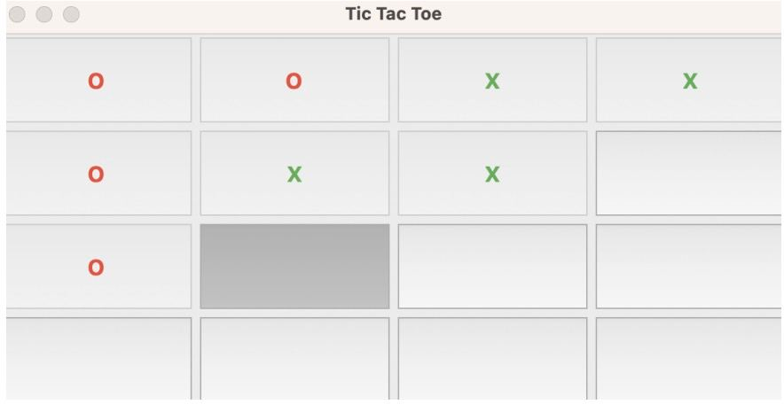
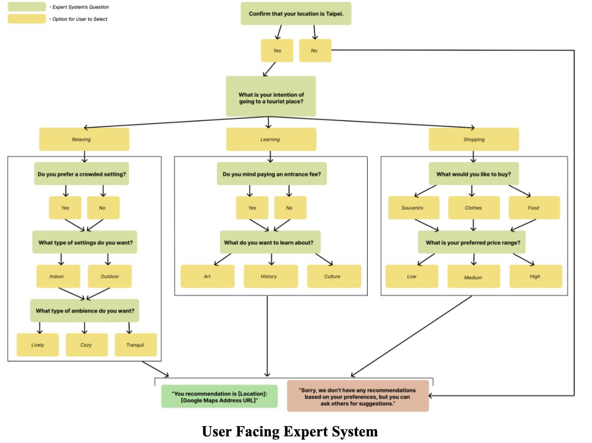
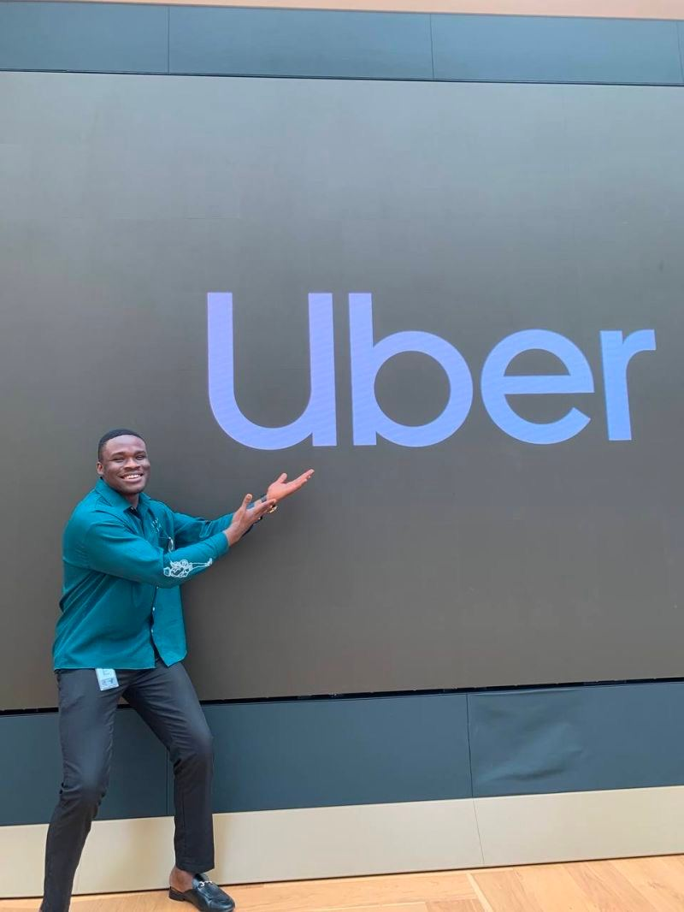
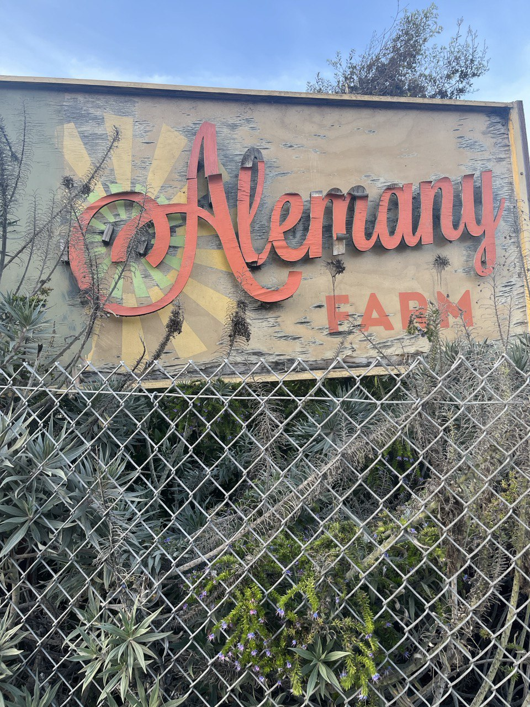

Mission statement: Dedicated to empowering society through technological innovation, I develop software solutions tailored to real-world needs. By championing collaboration and diverse insights,
I aim for a future where technology bridges gaps and facilitates growth for all.

A cutting-edge AI engine that leverages Q-learning techniques to master 4x4 Tic Tac Toe gameplay. This innovative system adapts and refines its strategies over time, providing a challenging opponent for even the most seasoned players. A blend of traditional game mechanics and advanced machine learning.
Expert System for Recommending Tourist Destinations.

Utilizing the logic-based language Prolog, I developed an expert system designed to provide personalized tourist destination recommendations. This system harnesses the power of Prolog's inference capabilities to analyze user preferences and deliver tailored travel suggestions, merging the worlds of traditional tourism and intelligent computing.

As a Software Engineering Intern at Uber Technologies Inc., I immersed myself in the dynamic world of ride-sharing technology. Collaborating closely with seasoned engineers and product teams, I contributed to various software development projects, enhancing app features and improving backend systems. This hands-on experience gave me invaluable insights into the intricacies of building scalable and user-centric applications within a globally renowned tech giant.
At Hands-On Labs, a cutting-edge Robotics laboratory, I serve as a Software Engineering Intern. My primary responsibility lies in designing the web interface that students utilize to interact with remote robots. Collaborating with a team of dedicated engineers and educators, I am actively involved in shaping an interactive and intuitive platform that bridges the gap between students and the fascinating world of robotics. This role has afforded me a unique perspective on the convergence of education, robotics, and web technologies.

During my tenure volunteering at Alemany Farm, I became deeply immersed in the heart of city-based agricultural initiatives. Situated amidst urban hustle, this farm stood as a testament to the resilience and ingenuity of the community. I contributed to various tasks, from sowing seeds to harvest, learning about sustainable farming techniques firsthand. This experience not only honed my appreciation for urban agriculture but also underlined the importance of community collaboration. By working alongside dedicated volunteers and local residents, I witnessed the profound impact such initiatives have on fostering local connections, promoting healthy living, and offering an educational hub within the cityscape.
In my personal project, I developed an AI-powered Market Forecasting Bot, harnessing the capabilities of the LSTM (Long Short-Term Memory) model. Written in Python, this bot delves deep into market data, identifying patterns and predicting potential market movements with improved accuracy. Through the LSTM's recurrent network architecture, I aimed to capture and analyze time-dependent sequences effectively, offering insightful predictions for market trends. This venture highlighted my commitment to blending financial acumen with cutting-edge AI technology, creating tools that facilitate informed decision-making in the dynamic world of market trading.